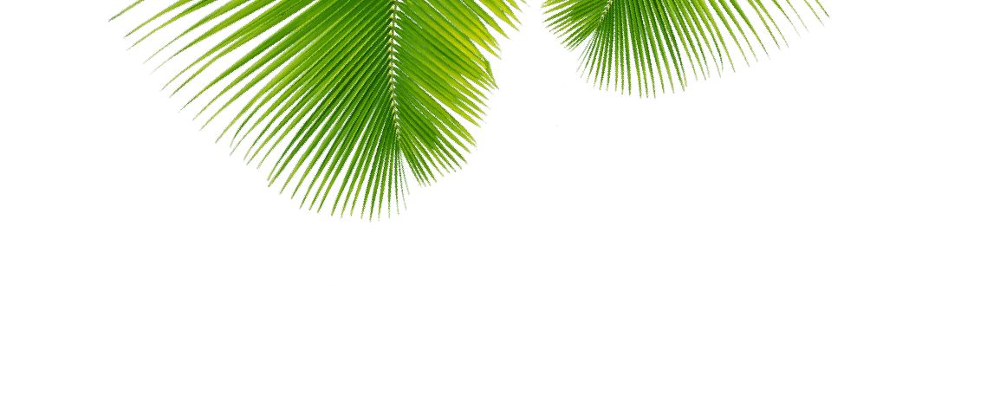
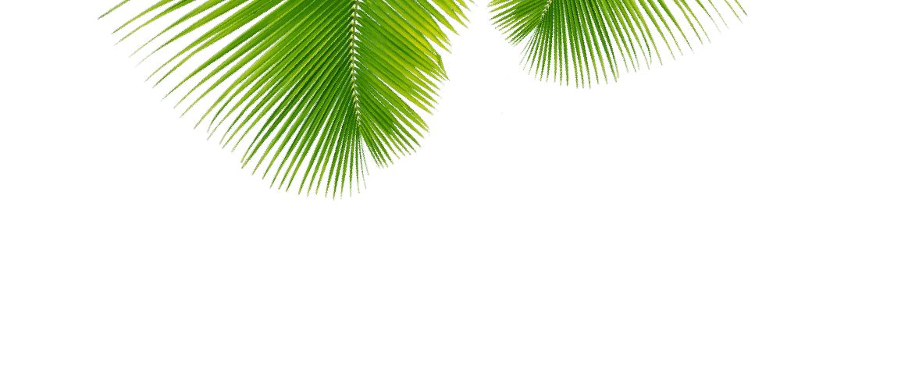

GINTARE
GABRIELLA ROZENAITE
STUDENT MULTIMEDIA DESIGNER
FUTURE FRONT END DEVELOPER
I am your usual tech-nerd who loves all aspects of multimedia design. From the sketching, designing, coding and problem-solving to the culture and people working in the field.
Most of all I am interested in coding. My code is clear, CSS is BEMed, currently learning JavaScript and SASS, in the future I would like to work with REACT in a SCRUM team. I have also used WordPress for personal projects, therefore, I am accustomed to it.
While my path is towards coding, I love helping on design as well. I like Illustrator because of its vector features and sketches importing capability using Illustrator Draw, but I also use Photoshop, InDesign and other Adobe programs daily.
As a lifelong learner, I am all-in for learning new technologies and trends. I am more than excited to work in a team with like-minded people.